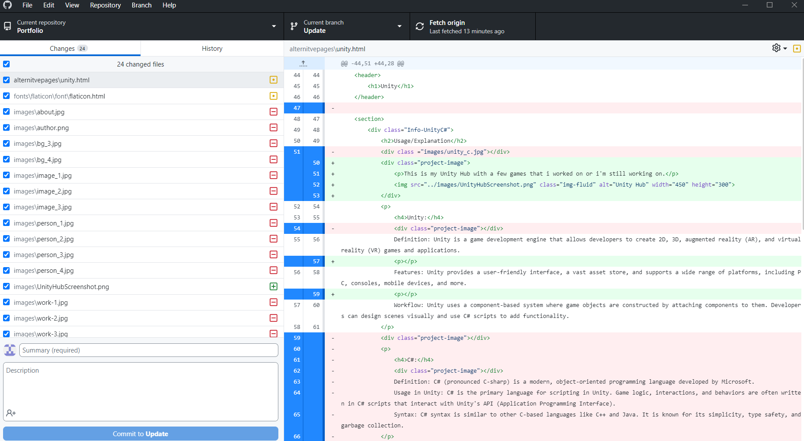

Usage/Explanation
This is a my github on a page i still need to push to update my branch.

GitHub:
Definition: At a high level, GitHub is a website and cloud-based service that helps developers store and manage their code, as well as track and control changes to their code. To understand exactly what GitHub is, you need to know two connected principles: Version control. Git.
Features: Easy Project Management, Increased Safety With Packages, Effective Team Management, Improved Code Writing, Increased Code Safety, Easy Code Hosting.
Workflow: Rather than commit directly to the main branch, developers create a branch, make changes, submit a merge request (or pull request), and then merge it into main. Ideally, a feature branch should have a lifespan of a few hours.
In summary,
GitHub allows developers to host their files in a 'Git Repository' so that other people can collaborate on projects with them, whether they are open for public contribution (open source) or closed for specific colleagues to work on a private project.